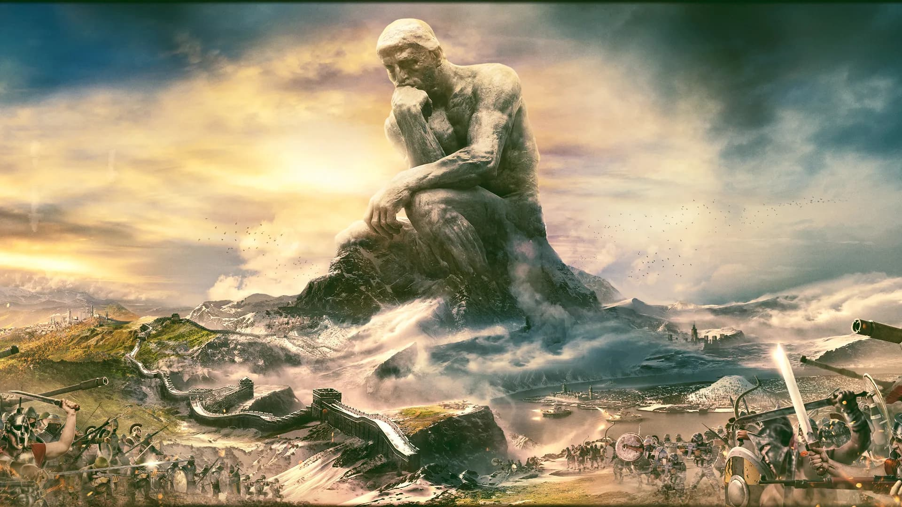
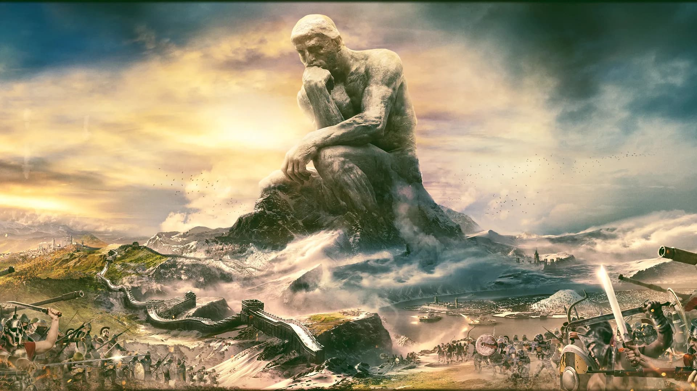

Dead Island: Riptide
Dead Island Riptide to przygodowa gra akcji, w której gracz wciela się w rolę członka ekipy próbującej uciec przed epidemią Zombie. Gra rozpoczyna się na zakażonej tropikalnej wyspie Palanai, a w trakcie rozgrywki odwiedzamy lokacjie takie jak miasto Henderson, tunele przemytników i laboratorium. Gra zawiera mechaniki takie jak drzewko umiejętności, ulepszanie i modyfikowanie zdobywanych broni, oraz tryb Furii, w trakcie której gracz staje się prawie niepokonany. Oprócz głównej fabuły i głównych zadań, na gracza czeka niezliczona ilość zadań pobocznych, za które można otrzymać nowe, silne, bronie, albo duże ilości doświadczenia.
Grywalne postacie
- John
- Logan
- Sam B
- Xian Mei
- Purna
Każda z grywalnych postaci ma cechy specjalne, wyjątkowe. John Morgan może odblokować bardzo silny atak, kopniak z rozbiegu, Logan jest dorbry w obsłudze broni rzucanej, Sam B najlepiej walczy bronią obuchową, Xian Mei białą, a Purna palną.